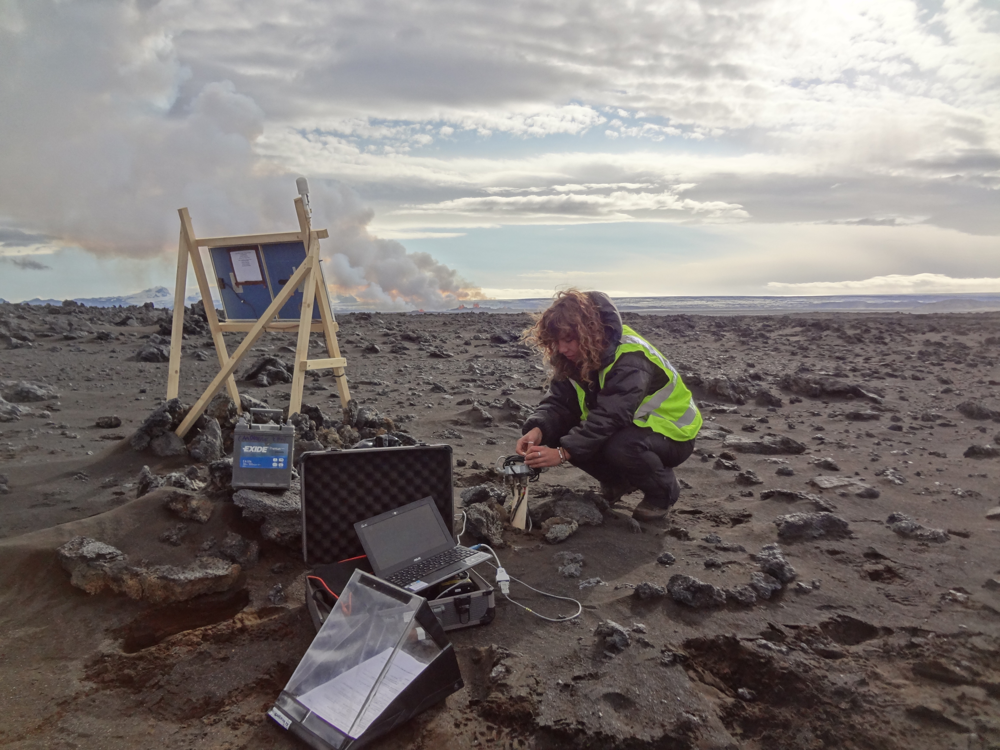

About me
Crustal formation on a spreading ridge above a mantle plume: receiver function imaging of the Icelandic crust. Jenkins, J., Maclennan, Green, R.G., Cottaar, S., Deuss, A.F., White, R.S. Journal of Geophysical Research, 123, 5190–5208 (2018). https://doi.org/10.1029/2017JB015121
Dynamics of the Askja caldera July 2014 landslide, Iceland, from seismic signal analysis: precursor, motion and aftermath. Schöpa, A., Chao, W., Lipovsky, B. Hovius, N., White, R. S., Green, R. G., Turowski, J. M. Earth Surf. Dynam., 6, 467–485 (2018). https://doi.org/10.5194/esurf-6-467-2018
Seismic Amplitude Ratio Analysis of the Bárðarbunga-Holuhraun dike propagation and eruption. Caudron. C., White. R. S., Green. R. G., Woods. J., Ágústsdóttir. Th., Donaldson. C., Greenfield. T., Rivalta. E., Brandsdóttir. B. Journal of Geophysical Research,, 123, 264–276 (2018). https://doi.org/10.1002/2017JB014660
Deep crustal melt plumbing of Bárðarbunga volcano, Iceland. Hudson. T. S., White. R. S., Greenfield. T., Ágústsdóttir. Th., Brisbourne. A., Green. R. G. Geophysical Research Letters, 44, 8785–8794 (2017).
http://dx.doi.org/10.1002/2017GL074749
 Download PDF
Download PDF
Relative seismic velocity variations correlate with deformation at Kilauea volcano. Donaldson. C., Caudron. C., Green. R. G., Thelen. W. A., White. R. S. Science Advances, 3, e1700219 (2017).
https://doi.org/10.1126/sciadv.1700219
 Download PDF
Download PDF
Ambient noise tomography reveals upper crustal structure of Icelandic rifts. Green. R. G., Priestley. K. P., White. R. S. Earth and Planetary Science Letters, 466, 20–31 (2017).
http://doi.org/10.1016/j.epsl.2017.02.039
 Download PDF
Download PDF
Strike-slip Faulting during the 2014 Bárðarbunga-Holuhraun Dike Intrusion, Central Iceland. Ágústsdóttir. Th., Woods. J., Greenfield. T., Green. R. G., White. R. S., Winder. T., Brandsdóttir. B., Steinthórsson. S., Soosalu. H. Geophysical Research Letters, 43 (2016).
http://dx.doi.org/10.1002/2015GL067423
 Download PDF
Download PDF
Triggered earthquakes suppressed by an evolving stress shadow from a propagating dyke. Green. R. G., Greenfield. T., White. R. S. Nature Geoscience, 8, 629–633 (2015).
http://doi.org/10.1038/ngeo2491
 Download pre-print
Download pre-print
Segmented lateral dyke growth in a rifting event at Bárðarbunga volcanic system, Iceland. Sigmundsson, F., Hooper, A., Hreinsdóttir, S., Vogfjörd, K.S., Ófeigsson, B.G., Heimisson, E.R., Dumont, S., Parks, M., Spaans, K., Gudmundsson, G.B., Drouin, V., Árnadóttir, T., Jónsdóttir, K., Gudmundsson, M.T., Högnadóttir, T., Fridriksdóttir, H.M., Hensch, M., Einarsson, P., Magnússon, E., Samsonov, S., Brandsdóttir, B., White, R.S., Ágústsdóttir, T., Greenfield, T., Green, R.G., Hjartardóttir, Á.R., Pedersen, R., Bennett, R.A., Geirsson, H., La Femina, P.C., Björnsson, H., Pálsson, F., Sturkell, E., Bean, C.J., Möllhoff, M., Braiden, A.K., Eibl, E.P.S. Nature, 517, 191–195 (2015).
http://doi.org/10.1038/nature14111
 View shared epdf
View shared epdf
Motion in the north Iceland volcanic rift zone accommodated by bookshelf faulting. Green. R. G., White. R. S. & Greenfield. T. Nature Geoscience, 7, 29–33 (2014).
http://doi.org/10.1038/ngeo2012
 Download pre-print
Download pre-print
The structure and seismicity of Icelandic rifts. Green. R. G., University of Cambridge, (2016). Please cite the papers.
Bárðarbunga-Holuhraun 2014 dyke intrusion:
“Installing seismic stations at a safe distance from the spectacular fire fountains”
“This seismic station was installed just hours before the magma erupted”


Earthquake Triggering during Dyke propagation:
Green et al. Nature Geoscience,(2015).
http://doi.org/10.1038/ngeo2491
Velocity structure of the Icelandic crust
Green et al. Earth and Planetary Science Letters, (2017).
http://doi.org/10.1016/j.epsl.2017.02.039
Earthquakes at Askja and Bookshelf Faulting near Herðubreið:
Green et al. Nature Geoscience, (2014).
http://doi.org/10.1038/ngeo2012
“Retrieving stations from Vatnajökull icecap”

“Deploying stations in Askja volcano caldera”